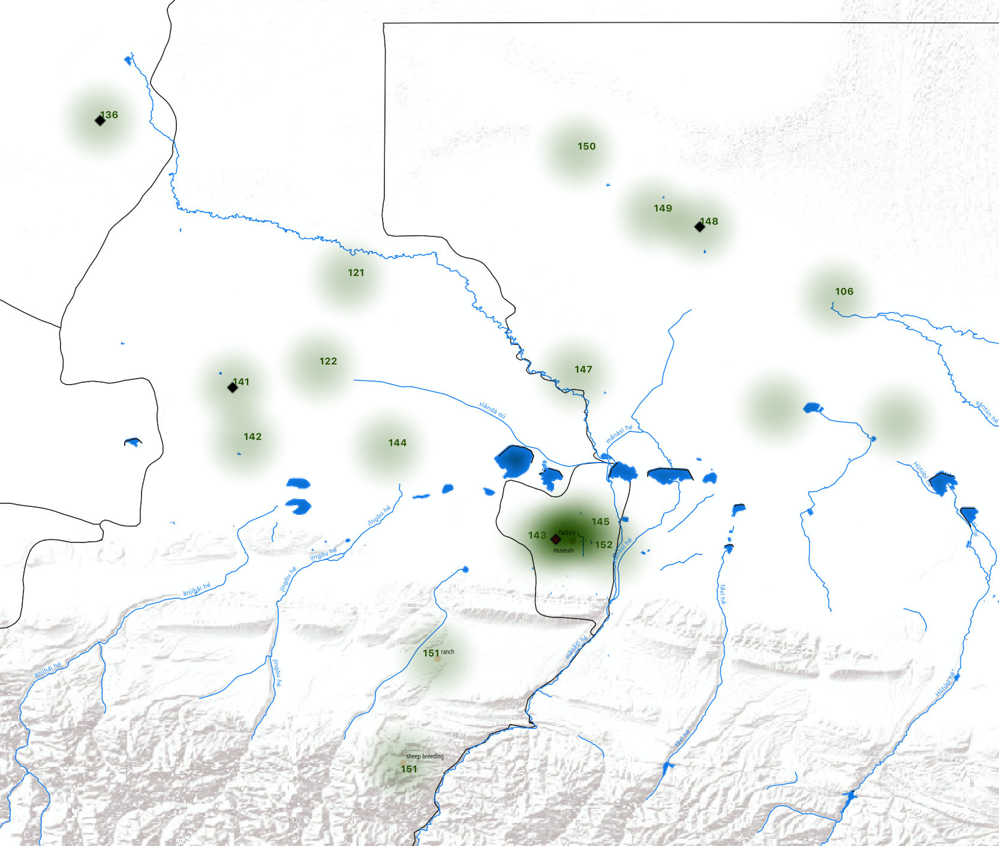
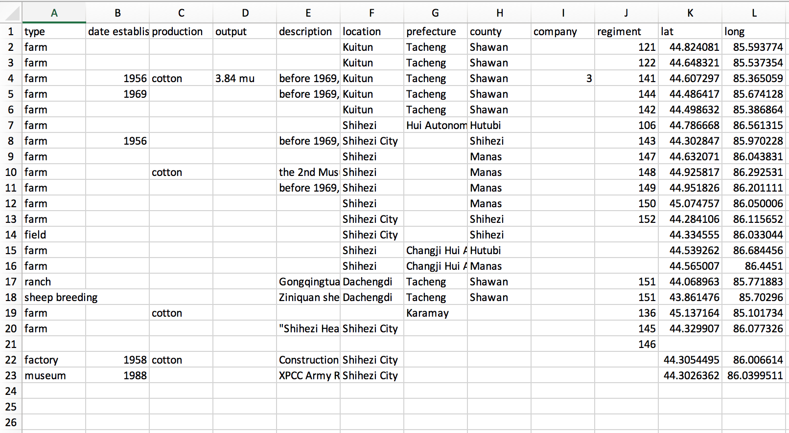
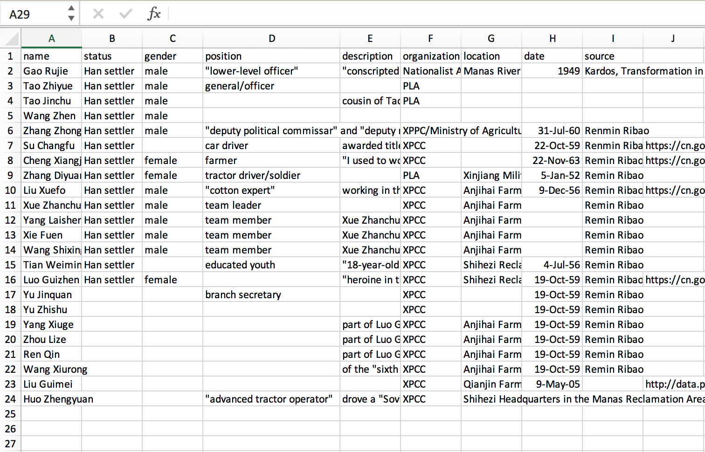

Xinjiang Cotton
Land and Labor at the Margins of Chinese Empire
Isabelle A. Tan
April 14, 2023
ARC 550
Mapping Labor:
Historic Farms of the 8th Agricultural Division of the XPCC in the Shihezi Military Reclamation Area
Cotton production shown in black.

Updated datasets:

Mapped dataset on XPCC historic farms and other areas of interest

New dataset of workers by name